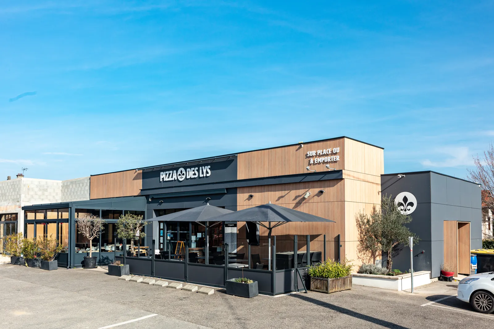
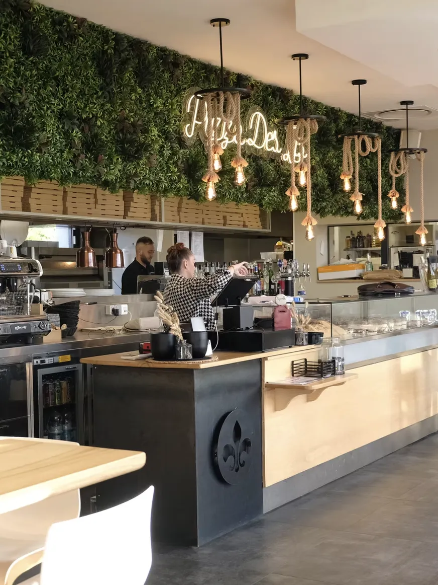
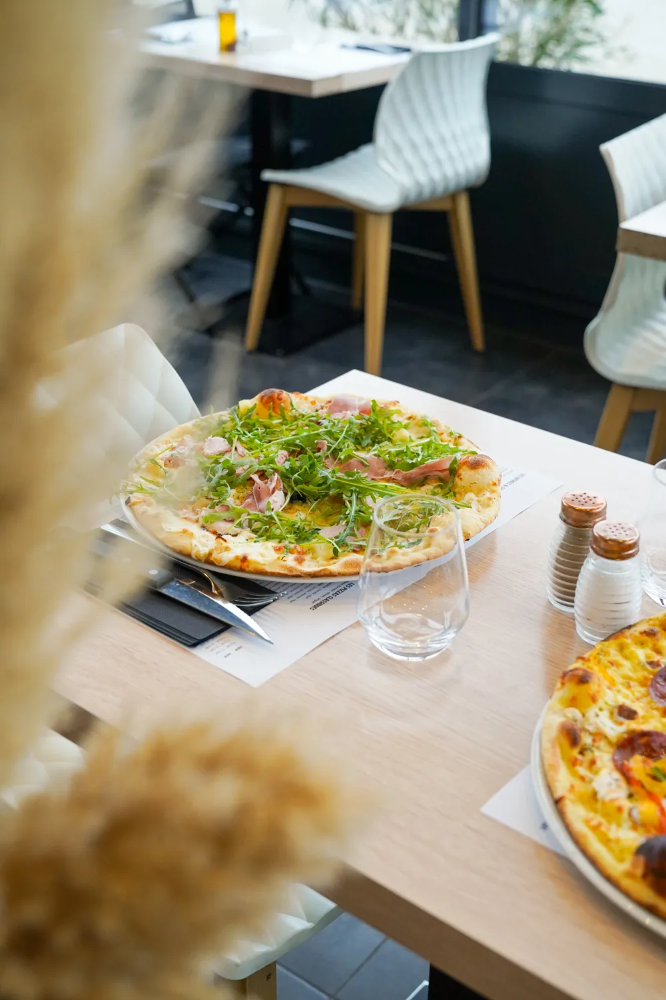
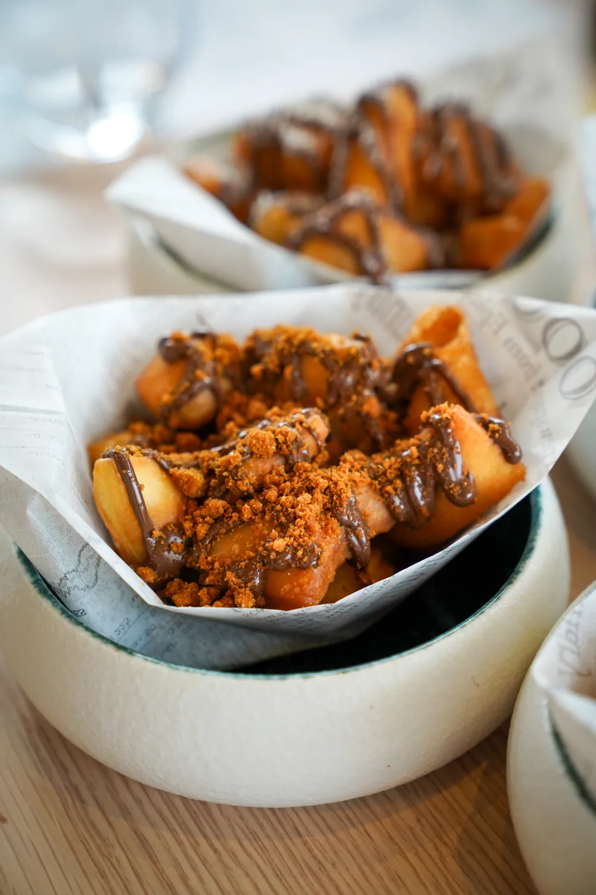
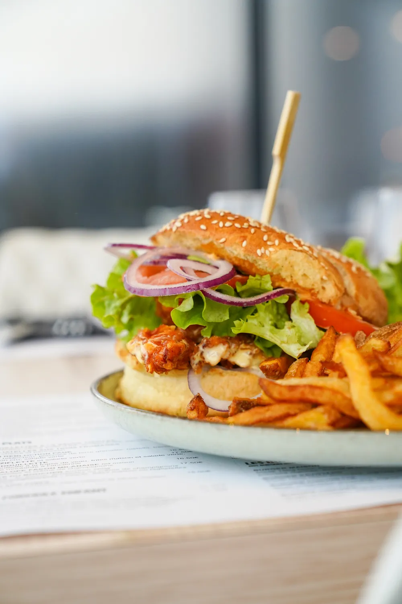
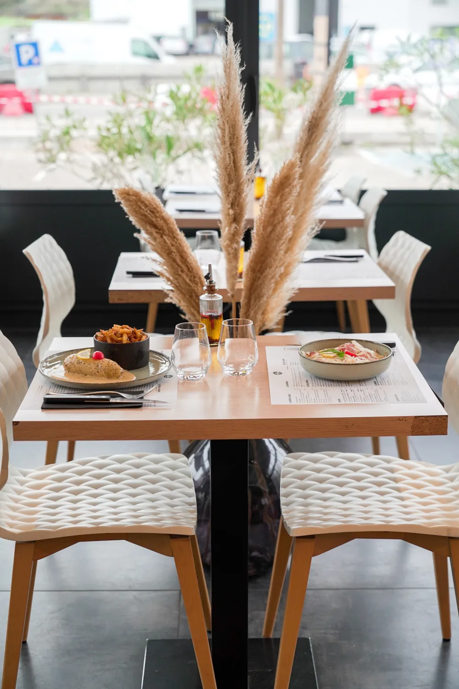

Accueil / Péronnas
Là où tout a commencé
Au cœur de Péronnas, notre pizzeria vous accueille le midi et le soir, pour un moment gourmand en toute simplicité.


Pizza des Lys
La recette Pizza des Lys
La passion, la curiosité et le goût du partage. Le tout servi avec le sourire d’une équipe adorable, toujours ravie de vous accueillir.
- Plus de 25 pizzas à la carte, et des plats variés.
- Sur place ou à emporter. Commande en ligne ou par téléphone.
- Distributeur 24 h/24 juste à côté du restaurant.
- Nouvelles recettes tout au long de l’année.
En images
SalleL’enseigne lumineuse, dans la salle PizzasPizza maison PlatsDes plats variés PlatsBurger et frites 
PizzasPizza au basilic frais SalleLa salle 
PlatsAssiette gourmande SalleLe restaurant de Péronnas SalleLe comptoir et le mur végétal
À table chez nous




Où nous trouver ?
Péronnas
833 avenue de Lyon, 01960 Péronnas
Lundi au samedi : 11 h 30 – 14 h · 18 h – 22 hDimanche : 18 h 30 – 21 h 30Horaires à confirmer avec le restaurant
Sur place · à emporter · 24 h/24